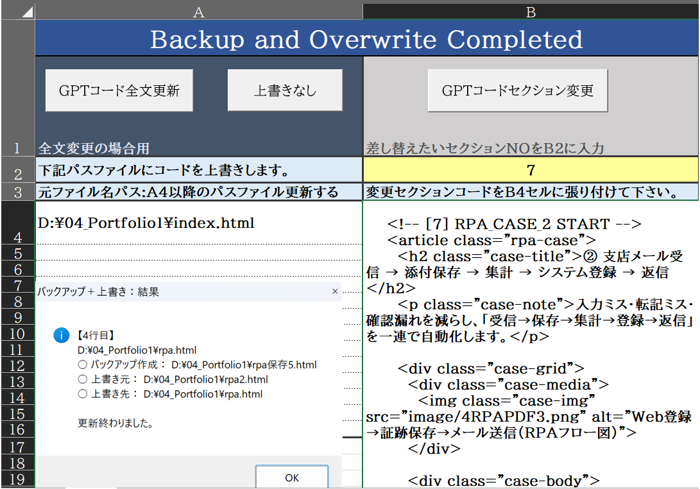
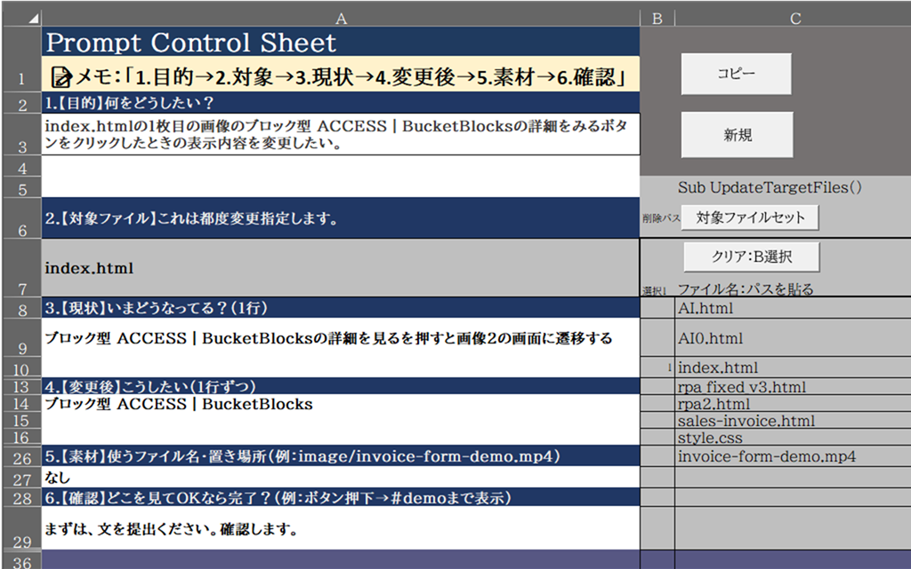
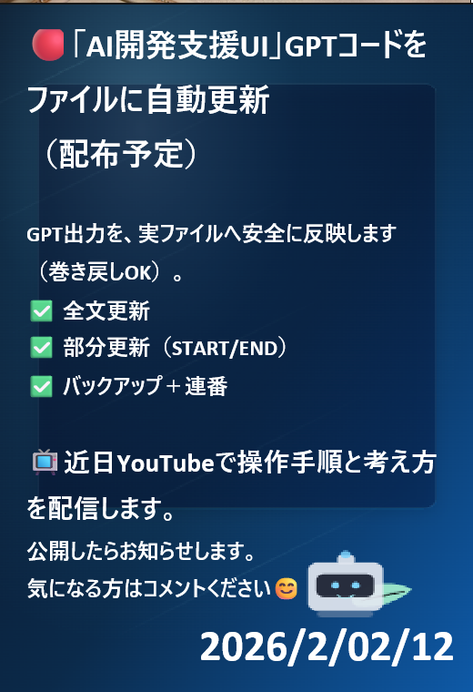

ブロック型 ACCESS｜BucketBlocks
データストア / 汎用マスタ
「項目が増え続ける」「システム化するほどでもない」現場向けに、 テキスト・数値・日付を“バケツ”のように追加できる ACCESS データベースです。
現場で起きている「困った」を、Excel / Access / RPA / AI の組み合わせで、
できるだけシンプルに、壊れにくく、運用しやすく整えることをテーマにしています。
🔴「AI開発支援UI」GPTコードをファイルに自動更新
気になるプロジェクトカードをクリックすると、下に詳細が表示されます。
データストア / 汎用マスタ
「項目が増え続ける」「システム化するほどでもない」現場向けに、 テキスト・数値・日付を“バケツ”のように追加できる ACCESS データベースです。

Excel マクロ / 請求書
ACCESS の売上データから、Excel 請求書フォームへ明細を流し込み、 PDF出力とログ記録までを一気通貫で行うツールです。
詳細（デモ動画）を見る
PDF / テキスト化 / RPA連携
PDFをフォルダから自動で読み込み、テキスト化して蓄積・検索・共有へつなぐ仕組みです。 詳細はRPAページにまとめます。
RPAページへカードの「詳細」をクリックすると、ここに内容が表示されます。

「作る」だけでなく「壊さずに運用する」ための、更新フローをUI化しています。GPTの出力をそのままローカルファイルへ反映する前に、バックアップ＋安全な上書きをセットで行い、「更新が怖い」を減らします。
指示プロンプト作成シートは、依頼の型を固定してAI出力のブレを抑え、レビューしやすくします。


現場で使える“止まらない”仕組みを、わかりやすく。
AbeLab は、既存システムと連携しながら、Excel／Access／VBA／RPA（Power Automate）などを組み合わせて、 「入力を減らす」「ミスを減らす」「止まらない」業務フローをつくります。
まず“人がやっている手順”を尊重し、壊さずに改善します。 その上で、ログ・検証・例外処理まで含めて、翌月も回る仕組みへ整えます。
小さく始めて、現場に合わせて育てます。
“作って終わり”ではなく、運用が続く形に仕上げます。
お仕事のご相談・ご連絡はこちらから。
※公開用に整える段階で、記載情報を整理していきます。